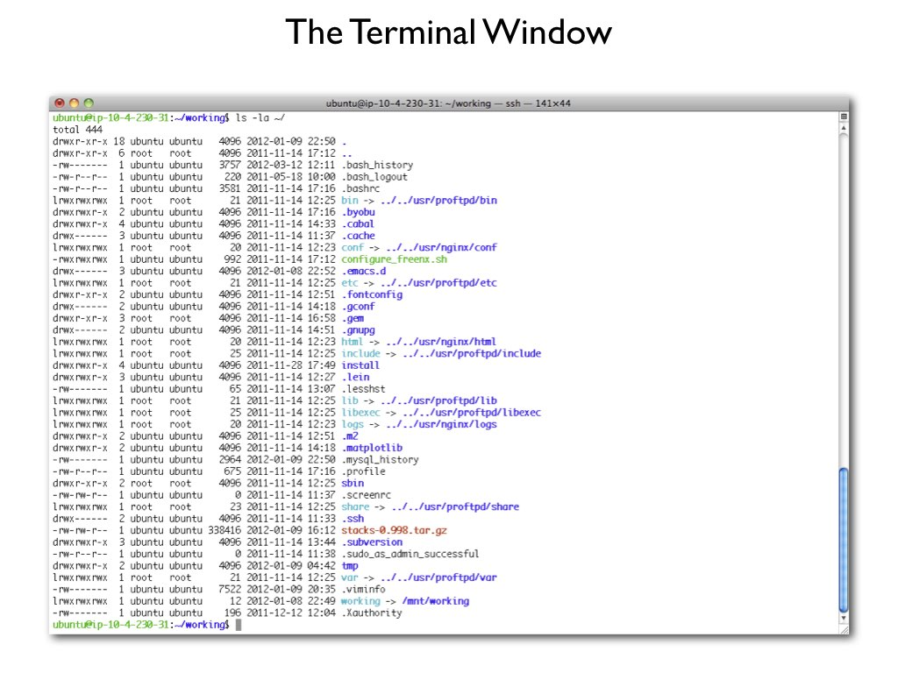
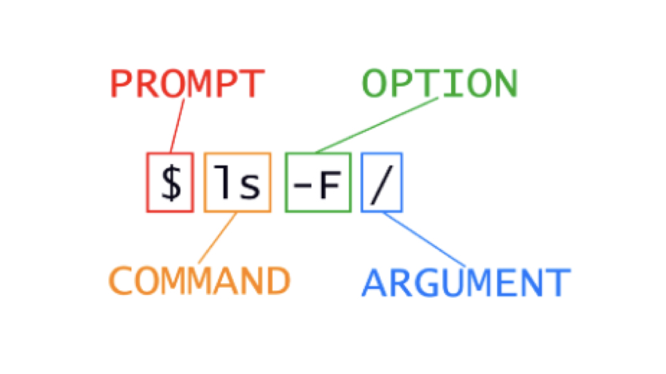

graph LR
A[1960s-70s<br/>Mainframes] --> B[1980s-90s<br/>Personal Computers]
B --> C[1990s-2000s<br/>Client-Server]
C --> D[2000s<br/>Clusters/Grids]
D --> E[2006+<br/>Cloud Computing]
E --> F[2020s<br/>Edge/Hybrid]
Local, Cluster and Cloud Computing; Intro to the Command Line
2026-10-05
graph LR
A[1960s-70s<br/>Mainframes] --> B[1980s-90s<br/>Personal Computers]
B --> C[1990s-2000s<br/>Client-Server]
C --> D[2000s<br/>Clusters/Grids]
D --> E[2006+<br/>Cloud Computing]
E --> F[2020s<br/>Edge/Hybrid]
Note
Important
Computing resources that are physically present and directly controlled by the user or organization
Characteristics
Common Setups
%%{init: {'theme':'base'}}%%
graph TB
A[Applications] --> B[Operating System]
B --> C[Hardware Abstraction Layer]
C --> D[CPU]
C --> E[Memory]
C --> F[Storage]
C --> G[GPU]
C --> H[Network Card]
H --> I[Internet/LAN]
A collection of interconnected computers working together as a single system
%%{init: {'theme':'base'}}%%
graph TB
M[Master/Head Node] --> N1[Node 1]
M --> N2[Node 2]
M --> N3[Node 3]
M --> N4[Node N]
N1 -.-> S[Shared Storage]
N2 -.-> S
N3 -.-> S
N4 -.-> S
U[Users] --> M
Key Components
These are used to schedule computing jobs on computer clusters.
| System | Use Case | Key Features |
|---|---|---|
| SLURM | HPC | Advanced scheduling, power management |
| PBS/Torque | Traditional HPC | Mature, stable, wide support |
| SGE/UGE | Mixed workloads | Flexible policies |
| Kubernetes | Containers | Microservices, auto-scaling |
Important
We use SLURM on Talapas at the University of Oregon for scheduling compute jobs
On-demand delivery of computing resources over the internet with pay-as-you-go pricing
%%{init: {'theme':'base'}}%%
graph TB
R[Region 1] --> AZ1[Availability Zone 1]
R --> AZ2[Availability Zone 2]
AZ1 --> C[Compute]
AZ1 --> S[Storage]
AZ1 --> N[Networking]
AZ2 --> C2[Compute]
AZ2 --> S2[Storage]
AZ2 --> N2[Networking]
U[Users] -.Internet.-> R
The ‘shell’ is a program that runs UNIX and takes in commands and gives them to the operating system
bash (Linux, WSL, Talapas) and zsh (macOS default) are the common shells - nearly identical for our purposes
You can access the shell via a terminal window


man [command_name] to access the manual for a specific commandq to exitBioE Computational Tools 2026 - Knight Campus